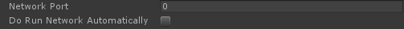

如何使用
编辑特效的一侧（应用程序、游戏等）
这取决于插件或者库。为了通过网络编辑特效，设置用于通信的端口。
执行一个函数以启动服务器的通信，或者让函数自动执行。然后播放你要编辑的特效。

Effekseer
在Effekseer中，打开你想编辑的特效的原始文件。在网络面板上设置连接目标并连接。编辑特效并按下“发送数据”按钮。这样程序中的特效就被编辑了。

限制
由程序读取的efk文件的名字必须和编辑的文件的名字相同。例如，如果应用程序中播放“Laser.efk”，则工具中必须编辑“Laser.efkproj”。此外，编辑将不会影响程序中不存在的图像、模型和声音。
提示
当在同一台计算机上运行应用程序时，地址设置为127.0.0.1。
参数
地址
输入运行应用程序的计算机/服务器的IP地址或DNS。
自动连接
如果尚未建立连接，将会每隔一段固定的时间间隔尝试连接到远程应用程序。
载入时发送数据
当读取特效文件时，如果连接已建立，将特效数据发送给应用程序。
编辑时发送数据
当编辑特效文件时，如果连接已建立，将特效数据发送给应用程序。
保存时发送数据
当保存特效文件时，如果连接已建立，将特效数据发送给应用程序。